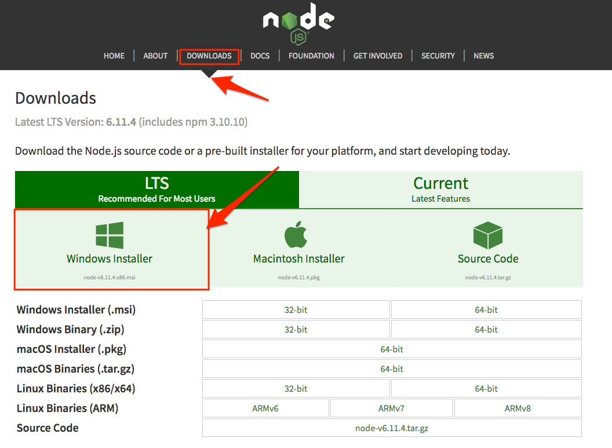
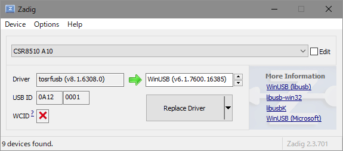
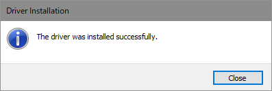

2. 開発環境を作ろう¶
これから、以下の4つのソフトウェアをインストールします。
- Node.js
- windows-build-tools モジュール
- noble モジュール
- node-rolling-spider モジュール
- temporal モジュール
- Zadig(ドライバ書き換えツール)
これらのソフトウェアを一つ一つインストールしていきましょう。
2.2. Node.js のインストール¶
下記サイトからインストーラーをダウンロードします。
Download > Windows Installer をクリックするとカレントバージョンの自身のPCに合わせたインストーラーがダウンロードされます。
Node.js と npm(node package manager) がインストールされます。
"node"がインストールされているかどうかをチェックします。
下記コマンドを実行してください。
node --version
バージョンが表示されればインストールは成功です。
もうひとつ、 npm も同時にインストールされているはずなのでこちらもチェックします。
下記コマンドを実行してください。
npm --version
こちらも、バージョンが表示されればインストールは成功です。
2.3. windows-build-tools モジュールのインストール¶
windows-build-tools 各種の Node モジュールを Windows ネイティブでコンパイルするための環境一式で、以下を一括でインストールできます
下記コマンドを**管理者**で実行してください
npm install --global windows-build-tools
Note
- インストールが結構かかりますので終わるまで気長に待ってください。
2.4. noble モジュールのインストール¶
Node.JSで Bluetooth 通信ができるモジュールです。
下記コマンドを実行してください。
npm install noble
2.5. node-rolling-spider モジュールのインストール¶
node-rolling-spider は ドローンをコントールするモジュールです。
下記コマンドを実行してください。
npm install rolling-spider
Note
- 黄色い文字で「WARN」がいくつか出てくると思いますが、大丈夫です。
- 赤い文字で「ERROR」の場合はネイティブコンパイル等に失敗しているので、エラーメッセージをもとに試行錯誤してください。
2.6. temporal モジュールのインストール¶
temporal はプログラムをでシーケンシャルに実行できるモジュールです。
下記コマンドをコマンドプロンプトから実行してください。
npm install temporal
2.7. Bluetooth アダプタの設定¶
node-rolling-spider が依存している node-bluetooth-hci-socket というモジュールを通じて使う場合は、「WinUSB」というドライバに書き換える必要があルため、Zadig というドライバ書き換えツールを使用してドライバを書き換えます。
下記サイトからZadigをダウンロードします。
ダウンロードが完了したら、zadig-2.3.exe をダブルクリックで実行します。
Options メニュー -> List All Devices を選択するとデバイスの一覧が出ます。
デバイスの一覧から Bluetooth アダプタ（今回の場合は「CSR8510 A10」）を選ぶと、左側に現在のドライバが出ます。
これを「WinUSB」に書き換えるため、「Replace Driver」をクリックします。
「The driver was installed successfully.」と出れば成功です。